<!doctype html>
<html lang="pt-BR">
<head>
<meta charset="utf-8">
<meta name="viewport" content="width=device-width, initial-scale=1">
<title>Projeto do Zero 2026</title>
<link rel="preconnect" href="https://fonts.googleapis.com">
<link href="https://fonts.googleapis.com/css2?family=Poppins:wght@400;500;600;700;800&family=JetBrains+Mono:wght@500&display=swap" rel="stylesheet">
<style>
:root{
  --bg:#14141A; --bg2:#1E1E24; --azul:#0059DB; --azul2:#467CF6; --ciano:#22C2F4; --ciano2:#62CFFC;
  --texto:#F5F6FC; --cinza:#6E7180; --linha:#2C2C36;
}
*{box-sizing:border-box;margin:0;padding:0}
html,body{height:100%;background:#000;overflow:hidden;font-family:Poppins,sans-serif;color:var(--texto)}
#stage{position:absolute;top:50%;left:50%;width:1920px;height:1080px;transform-origin:center center}
.slide{position:absolute;inset:0;background:var(--bg);padding:96px 140px 130px;display:none;flex-direction:column}
.slide.ativo{display:flex}
.slide::before{content:"";position:absolute;inset:0;background:radial-gradient(1100px 700px at 100% 0%,rgba(0,89,219,.22),transparent 60%);pointer-events:none}
.slide.secao{justify-content:center;background:linear-gradient(135deg,#0B2E73 0%,#14141A 70%)}
.rodape{position:absolute;left:140px;right:140px;bottom:44px;display:flex;justify-content:space-between;align-items:center;color:var(--cinza);font-size:22px}
.rodape img{height:38px}
.kicker{font-size:26px;font-weight:600;color:var(--ciano);letter-spacing:.12em;text-transform:uppercase;margin-bottom:22px}
h1{font-size:100px;line-height:1.04;font-weight:800;letter-spacing:-.02em}
h2{font-size:60px;line-height:1.1;font-weight:700;letter-spacing:-.01em;margin-bottom:40px}
.dest{color:var(--ciano)}
p.lead{font-size:33px;line-height:1.45;color:#C9CBD6;max-width:1500px}
.grid{display:grid;gap:26px}
.card{background:var(--bg2);border:1px solid var(--linha);border-radius:24px;padding:30px 36px}
.card h3{font-size:30px;font-weight:700;margin-bottom:10px}
.card p{font-size:24px;line-height:1.45;color:#C9CBD6}
.card.az{border-color:rgba(70,124,246,.6)}
.num{font-size:28px;font-weight:800;color:var(--ciano)}
table{width:100%;border-collapse:collapse;font-size:25px}
th{text-align:left;color:var(--cinza);font-weight:600;padding:11px 16px;border-bottom:2px solid var(--linha)}
td{padding:12px 16px;border-bottom:1px solid var(--linha);color:#C9CBD6;vertical-align:top}
td:first-child{color:var(--texto);font-weight:600}
code,.mono{font-family:"JetBrains Mono",monospace}
td code{font-size:22px;color:var(--ciano2)}
.chip{display:inline-block;padding:7px 18px;border-radius:999px;background:rgba(34,194,244,.12);border:1px solid rgba(34,194,244,.4);color:var(--ciano2);font-size:22px;font-weight:600;margin:0 10px 10px 0}
ul.check{list-style:none}
ul.check li{position:relative;padding-left:42px;margin-bottom:14px;font-size:27px;line-height:1.4;color:#DADCE6}
ul.check li::before{content:"✓";position:absolute;left:0;color:var(--ciano);font-weight:800}
.cmd{background:#0B0B10;border:1px solid var(--linha);border-radius:16px;padding:22px 28px;font-family:"JetBrains Mono",monospace;font-size:23px;color:var(--ciano2);white-space:pre;line-height:1.55}
.cmd .c{color:var(--cinza)}
.grande{font-size:200px;font-weight:800;line-height:.9;color:var(--azul2)}
.decisao{display:grid;grid-template-columns:1fr 1fr;gap:56px;flex:1}
.bignum{font-size:150px;font-weight:800;line-height:.85;color:transparent;-webkit-text-stroke:3px var(--azul2);margin-bottom:10px}
.parte{font-size:22px;font-weight:700;color:var(--cinza);text-transform:uppercase;letter-spacing:.1em;margin-bottom:6px}
.rot{font-size:21px;font-weight:700;color:var(--cinza);text-transform:uppercase;letter-spacing:.1em;margin-bottom:12px}
.problema{border-left:4px solid var(--ciano);padding-left:26px;margin-top:22px}
.problema p{font-size:28px;line-height:1.45;color:#DADCE6}
.ponte{position:absolute;left:140px;right:140px;bottom:104px;display:flex;gap:18px;align-items:center;padding:16px 26px;border-radius:16px;background:rgba(0,89,219,.18);border:1px solid rgba(70,124,246,.45);font-size:23px;color:#DADCE6}
.ponte b{color:var(--ciano2);white-space:nowrap}
.ponte.lacuna{background:rgba(110,113,128,.12);border-color:var(--linha);color:var(--cinza)}
.mapa{grid-template-columns:repeat(4,1fr)}
.mapa .card{padding:22px 28px;min-height:118px}
.mapa .card h3{font-size:26px;margin:4px 0 0}
.mapa .card.f{opacity:.8}
.fluxo{display:flex;align-items:center;gap:14px}
.fluxo .card{flex:1;text-align:center;padding:24px 14px}
.fluxo .card h3{font-size:25px}
.fluxo .card p{font-size:20px}
.seta{font-size:38px;color:var(--ciano)}
.stat{font-size:96px;font-weight:800;color:var(--ciano);line-height:1}
.logos{display:flex;gap:40px;align-items:center;margin-top:40px}
.logos img{height:64px}
.tree{font-family:"JetBrains Mono",monospace;font-size:21px;line-height:1.5;color:#DADCE6;white-space:pre;background:#0B0B10;border:1px solid var(--linha);border-radius:16px;padding:22px 28px}
.tree .c{color:var(--cinza)}
.tree .d{color:var(--ciano2)}
.termos .card{padding:22px 26px}
.termos .card h3{font-size:24px;color:var(--ciano2);margin-bottom:8px}
.termos .card p{font-size:21px}
#nav{position:fixed;bottom:14px;right:18px;color:#555;font:14px Poppins;z-index:5}
</style>
</head>
<body>
<div id="stage"></div>
<div id="nav"></div>
<script>
const D = [
 {t:"Terminal e Git", parte:1, tools:["Terminal / Git Bash","git","GitHub","Claude Code"],
  prob:"O agente roda comando no terminal. Se você não sabe onde está nem o que ele vai rodar, aprova às cegas. Sem Git, não tem como desfazer.",
  live:["Criar a pasta e dar git init","Primeiro commit e subir para o GitHub","Abrir o Claude Code na pasta"],
  conf:"pwd, git status e git diff antes de cada commit",
  ponte:"Curso Git e GitHub · Trilha Claude Code, Módulo 1 (Setup)"},
 {t:"uv e ambiente", parte:1, tools:["uv","pyproject.toml","uv.lock",".python-version"],
  prob:"“Na minha máquina funciona”, agora também com o agente instalando pacote solto.",
  live:["uv sync instala Python 3.13 e tudo","uv add para cada dependência","Outra máquina reproduz com um comando"],
  conf:"Dependência entrou com uv add; uv.lock commitado",
  ponte:null},
 {t:"Segredos", parte:1, tools:[".env",".env.example","GitHub Secrets","deny no settings.json"],
  prob:"Um projeto de 2026 tem chave de banco, CRM, e-mail, mídia e IA. O agente, para “funcionar logo”, cola a chave no código.",
  live:[".gitignore antes do primeiro commit",".env com valores, .env.example sem","O agente proibido de ler o .env"],
  conf:"Nenhuma chave no código nem no histórico",
  ponte:null},
 {t:"Todo script fica no repositório", parte:1, tools:["scripts/","uv run python -m"],
  prob:"O agente resolve com um script temporário, funciona, e no mês seguinte ninguém sabe como aquele número saiu.",
  live:["Pedir uma análise ao agente","Ver onde ele salvou","Mover para scripts/ e rodar de novo"],
  conf:"Dá para gerar o mesmo resultado amanhã com um comando",
  ponte:"Trilha Claude Code · Projeto 2 (Engenharia e Análise de Dados)"},
 {t:"Spec antes do código: PRD", parte:2, pilar:"alinhamento", tools:["prd.md","entrevista (grill-me)"],
  prob:"Sem especificação, o agente inventa requisito e você só descobre no fim. A maior falha não é o código, é o desalinhamento.",
  live:["A ideia em 5 linhas","O agente entrevista você até fechar cada decisão","Meia página de PRD e um plano antes do código"],
  conf:"O plano bate com o PRD; o critério de aceite é testável",
  ponte:"Trilha Claude Code · PRD e Spec-Driven · Curso Agent Harness"},
 {t:"Contexto: CLAUDE.md, memória e skills", parte:2, pilar:"memória", tools:["CLAUDE.md","HANDOFF.md","decisoes.md","skill"],
  prob:"O agente esquece tudo entre uma conversa e outra. A janela é transitória; os arquivos lembram.",
  live:["CLAUDE.md curto com “nunca quebrar”","A skill atualizar-indicadores","Conversa nova: o agente continua pelo HANDOFF.md"],
  conf:"A regra está escrita ou só “combinada”? Cabe numa tela?",
  ponte:"Curso Agent Harness · Trilha Claude Code, Módulo 3"},
 {t:"Conectar: APIs e MCP", parte:2, pilar:"ferramentas", tools:["httpx","API do Banco Central","MCP somente leitura"],
  prob:"O projeto não vive sozinho. O trabalho virou ligar o agente a banco, CRM, planilha e mídia, cada um com sua chave e seus limites.",
  live:["API do BCB por script (repetível)","Postgres pelo MCP em modo somente leitura","“Qual foi o maior dólar do mês?”"],
  conf:"Cada conexão só tem a permissão que precisa",
  ponte:"Trilha Python · APIs · Trilha Engenharia de IA, Tools e MCP"},
 {t:"Permissões", parte:2, pilar:"execução", tools:["allow","ask","deny","settings.json"],
  prob:"Algumas ações não têm volta: alterar a campanha de outra pessoa, criar cadastro de teste que vira cliente no CRM, trocar o link que mede a conversão.",
  live:["Leitura livre, commit com pergunta, destrutivo proibido","Pedir “apaga a pasta data” e ver o bloqueio","Regra escrita x regra imposta"],
  conf:"Dá para desfazer? A proteção depende do agente lembrar?",
  ponte:"Curso Agent Harness · Trilha Engenharia de IA, Human in the Loop"},
 {t:"Conferir o número", parte:2, pilar:"validação", tools:["transformar.py","conferir.py","pytest","hook Stop","revisor"],
  prob:"O agente entrega um número bonito e errado com toda a confiança. E as fontes não batem: o pixel do anúncio conta cerca de 40% menos inscritos que o banco.",
  live:["Armadilhas reais: texto, IPCA negativo, Selic no futuro","conferir.py: banco x API, erro se não bater","Hook que não deixa dizer “pronto” com vermelho"],
  conf:"De onde veio? Bate com outra fonte? O erro virou teste?",
  ponte:"Curso Agent Harness · Desafio de Agosto, aula 3 (Harness Engineering)"},
 {t:"Onde o projeto vive", parte:2, pilar:"infra", tools:["DuckDB local","Supabase Postgres","Supabase Storage","Databricks"],
  prob:"Supabase para começar, Databricks para escalar, Vercel para expor. Não precisa de AWS no dia 1.",
  live:["Mesmo código: DuckDB sem .env, Postgres com DATABASE_URL","Bruto no Storage","A tabela no Databricks como próximo passo"],
  conf:"Rodar duas vezes não duplica; nada ficou público sem querer",
  ponte:"Trilha Databricks · Medalhão e Projeto completo · Trilha Python, SQLAlchemy"},
 {t:"Rodar sozinho", parte:2, pilar:"execução", tools:["GitHub Actions","cron 9h","secrets"],
  prob:"Projeto que depende de você abrir o notebook não é projeto. O bom roda de manhã e só entrega o relatório.",
  live:["diario.yml às 9h com as chaves nos secrets","Relatório do dia salvo no repositório","ci.yml: PR vermelho não entra"],
  conf:"Quando falha, alguém fica sabendo?",
  ponte:"Trilha Databricks · Lakeflow Jobs · Engenharia de Dados, Airflow"},
 {t:"Custo e limite", parte:2, pilar:"infra", tools:["tokens","créditos","tempo de revisão"],
  prob:"Token, crédito de ferramenta e, principalmente, o seu tempo revisando o que a IA fez. Nem tudo precisa de IA.",
  live:["A pipeline roda sem agente (zero token)","O agente opera, explica e revisa","Quando não usar IA"],
  conf:"A tarefa repetida virou script ou continua gastando token?",
  ponte:"Trilha Claude Code · “Os 8 Passos para Implementar Claude Code na Sua Organização”"},
];

const n2 = i => String(i+1).padStart(2,"0");
const rod = n => `<div class="rodape"><span>Projeto de Dados do Zero · 2026</span><span>${n}</span></div>`;
const S = [];
const secao = (k,t,p) => S.push({cls:"secao",h:`<div class="kicker">${k}</div><h1 style="font-size:96px">${t}</h1>${p?`<p class="lead" style="margin-top:36px">${p}</p>`:""}`});
const add = h => S.push({h});
const decisao = (d,i) => add(`<div class="decisao">
<div><div class="bignum">${n2(i)}</div><div class="parte">${d.parte===1?"Parte 1 · fundamento":"Parte 2 · harness · "+d.pilar}</div>
<h2 style="margin-bottom:20px">${d.t}</h2>
<div>${d.tools.map(x=>`<span class="chip">${x}</span>`).join("")}</div>
<div class="problema"><div class="rot">O problema real</div><p>${d.prob}</p></div></div>
<div style="display:flex;flex-direction:column;gap:26px;padding-top:30px">
<div class="card"><div class="rot">Na live</div><ul class="check">${d.live.map(x=>`<li>${x}</li>`).join("")}</ul></div>
<div class="card az"><div class="rot">Você confere</div><p style="font-size:28px;color:#fff;font-weight:600">${d.conf}</p></div></div></div>
${d.ponte?`<div class="ponte"><b>Aprofunde na Jornada →</b><span>${d.ponte}</span></div>`:`<div class="ponte lacuna"><b style="color:var(--cinza)">Na Jornada →</b><span>aula nova, gravada a partir desta live</span></div>`}`);

/* ABERTURA */
add(`<div class="kicker">Live remasterizada · 2023 → 2026</div>
<h1>Como estruturar o seu<br>projeto de dados <span class="dest">do zero</span></h1>
<p class="lead" style="margin-top:44px">A IA escreve o código. As 12 decisões que fazem o projeto funcionar continuam sendo suas.</p>
<div class="logos"></div>`);

add(`<div class="kicker">Out/2023</div><h2>O mesmo projeto, há 3 anos</h2>
<div class="grid" style="grid-template-columns:1.1fr 1fr;align-items:start">
<div><div class="grande">4h25</div><p class="lead" style="margin-top:24px">ao vivo, tudo na mão. O desafio era <b style="color:#fff">escrever</b> o projeto: ambiente, Git, testes, documentação, CI.</p></div>
<div class="card"><h3>O que quebrou ao vivo</h3><ul class="check" style="margin-top:18px">
<li>Versão do Python no VS Code</li><li>Caminho relativo na pasta app/</li><li>Black brigando com Flake8</li><li>Pre-commit removido do projeto</li><li>CI só funcionou num repo antigo</li><li>Deploy: “fica para o próximo”</li></ul></div></div>`);

add(`<div class="kicker">2026</div><h2>Agora o agente escreve. O problema mudou.</h2>
<div class="grid" style="grid-template-columns:repeat(3,1fr)">
<div class="card"><h3>Ele esquece</h3><p>Cada conversa começa do zero se as regras não estiverem escritas.</p></div>
<div class="card"><h3>Ele tem a chave do carro</h3><p>Mexe em banco, CRM e planilha. Algumas ações não têm volta.</p></div>
<div class="card"><h3>Ele inventa número</h3><p>Com confiança. E as fontes não batem entre si.</p></div>
<div class="card"><h3>Tudo é conexão</h3><p>O trabalho virou ligar sistemas, mais do que escrever código.</p></div>
<div class="card"><h3>Precisa rodar sem você</h3><p>Se depende de você abrir o notebook, não é projeto.</p></div>
<div class="card"><h3>Tudo tem custo</h3><p>Tokens, créditos e o seu tempo de revisão.</p></div></div>`);

add(`<div class="kicker">Como eu trabalho hoje</div><h2>Um repositório opera os lançamentos da Jornada</h2>
<div class="grid" style="grid-template-columns:repeat(3,1fr)">
<div class="card"><div class="stat">200+</div><p style="margin-top:12px">scripts salvos no repositório</p></div>
<div class="card"><div class="stat">~30</div><p style="margin-top:12px">skills, uma para cada tarefa que se repete</p></div>
<div class="card"><div class="stat">0</div><p style="margin-top:12px">pessoas no time de desenvolvimento</p></div></div>
<p class="lead" style="margin-top:48px">Conectado a banco, CRM, mídia paga e área do aluno. Rotinas rodam sozinhas de manhã e à noite.<br>Não tem pre-commit nem MkDocs. Tem <b style="color:#fff">regras escritas, permissões e conferência de número</b>.</p>`);

add(`<div class="kicker">O que vamos construir</div><h2>Um painel de indicadores operado por agente</h2>
<div class="fluxo">
<div class="card"><h3>API Banco Central</h3><p>dólar · Selic · IPCA</p></div><span class="seta">→</span>
<div class="card"><h3>Bruto</h3><p>data/raw + Storage</p></div><span class="seta">→</span>
<div class="card"><h3>Valida</h3><p>transformar.py</p></div><span class="seta">→</span>
<div class="card"><h3>Banco</h3><p>DuckDB ou Postgres</p></div><span class="seta">→</span>
<div class="card"><h3>Confere</h3><p>bate com a API?</p></div><span class="seta">→</span>
<div class="card"><h3>Relatório</h3><p>o que mudou hoje</p></div></div>
<table style="margin-top:44px"><tr><th>Indicador</th><th>Último</th><th>Data</th><th>Anterior</th><th>Variação</th></tr>
<tr><td>Dólar comercial (venda)</td><td>R$ 5,0377</td><td>23/10/2026</td><td>5,0383 (22/10)</td><td>-0,01%</td></tr>
<tr><td>Selic meta</td><td>13,75% a.a.</td><td>24/10/2026</td><td>13,75 (23/10)</td><td>0,00 p.p.</td></tr>
<tr><td>IPCA mensal</td><td>0,82%</td><td>01/09/2026</td><td>-0,32 (01/08)</td><td>1,14 p.p.</td></tr></table>
<p style="font-size:21px;color:var(--cinza);margin-top:14px">Relatório gerado pelo projeto em 24/10/2026 · fonte: API SGS do Banco Central (séries 1, 432, 433)</p>`);

add(`<div class="kicker">As 12 decisões</div><h2>Parte 1: fundamentos · Parte 2: o harness</h2>
<div class="grid mapa">${D.map((d,i)=>`<div class="card ${d.parte===1?"f":"az"}"><div class="num">${n2(i)}</div><h3>${d.t}</h3></div>`).join("")}</div>`);

/* PARTE 1 */
secao("Parte 1","Fundamentos que não mudaram","Terminal, Git, uv, segredos e script no repositório. Rápidos, mas obrigatórios.");
D.slice(0,4).forEach((d,i)=>decisao(d,i));

/* PARTE 2 */
secao("Parte 2","O harness","Tudo o que fica em volta do modelo e faz ele virar um agente que entrega.");
add(`<div class="kicker">Agent harness</div><h2>Quatro pilares em volta do modelo</h2>
<div class="grid" style="grid-template-columns:repeat(4,1fr)">
<div class="card az"><div class="rot">Memória</div><h3>CLAUDE.md · HANDOFF.md · decisoes.md · skill</h3><p>A janela é transitória. Os arquivos lembram.</p></div>
<div class="card az"><div class="rot">Ferramentas</div><h3>scripts · MCP somente leitura</h3><p>O agente só alcança o que você ligou, com a permissão que você deu.</p></div>
<div class="card az"><div class="rot">Execução</div><h3>allow · ask · deny · GitHub Actions</h3><p>O que não tem volta é bloqueado, não pedido.</p></div>
<div class="card az"><div class="rot">Validação</div><h3>testes · conferir.py · hook · revisor</h3><p>Não dá para dizer “pronto” com vermelho.</p></div></div>
<div class="grid" style="grid-template-columns:1fr 1fr;margin-top:30px">
<div class="card"><h3>Todo erro vira um sinal permanente</h3><p>Uma regra, uma permissão negada, um hook ou um teste. Em 2023 era “todo bug vira teste”.</p></div>
<div class="card"><h3>Comece mínimo</h3><p>O harness cresce quando aparece um risco novo, não por reflexo.</p></div></div>
<div class="ponte"><b>Aprofunde na Jornada →</b><span>Curso Agent Harness (3h48) · Desafio de Agosto, aula 3</span></div>`);
add(`<div class="kicker">Curso Agent Harness · Caio Oliveira · 28/06/2026</div><h2>O que levar da aula de 3h47 (com o minuto)</h2>
<div class="grid" style="grid-template-columns:repeat(3,1fr)">
<div class="card az"><div class="num">0:50</div><h3>Modelo razoável + bom harness</h3><p>ganha de modelo top com harness ruim.</p></div>
<div class="card"><div class="num">0:25</div><h3>Tudo que não é o modelo é harness</h3><p>O harness é a rédea do cavalo.</p></div>
<div class="card"><div class="num">1:46</div><h3>CLAUDE.md é mapa, não manual</h3><p>Até ~200 linhas. Sem ele, o agente faz grep e lê tudo.</p></div>
<div class="card"><div class="num">2:06</div><h3>Plano fechado</h3><p>Com PRD e issues, o agente muda o código, e não o plano.</p></div>
<div class="card"><div class="num">2:16</div><h3>O erro virou regra ao vivo</h3><p>Uma correção foi gravada na memória e não voltou.</p></div>
<div class="card"><div class="num">3:01</div><h3>A janela acaba, o repositório lembra</h3><p>Handoff é passagem de turno: só o crítico.</p></div></div>
<div class="ponte"><b>Aprofunde na Jornada →</b><span>Curso Agent Harness · resumo com minutos em referencias/agent-harness/</span></div>`);
D.slice(4).forEach((d,i)=>decisao(d,i+4));

/* O PROJETO POR DENTRO */
secao("O projeto por dentro","O que faz cada lugar","Cada arquivo responde a uma pergunta, e alguém (você, o agente ou o GitHub) é quem lê.");
add(`<div class="kicker">Estrutura</div><h2 style="margin-bottom:26px">O repositório</h2>
<div class="grid" style="grid-template-columns:1fr 1fr;gap:30px">
<div class="tree"><span class="d">CLAUDE.md</span>        <span class="c"># índice para o agente</span>
<span class="d">prd.md</span>           <span class="c"># o que e quando está pronto</span>
<span class="d">decisoes.md</span>      <span class="c"># por que está assim</span>
<span class="d">HANDOFF.md</span>       <span class="c"># onde a sessão parou</span>
<span class="d">pyproject.toml</span>   <span class="c"># dependências (uv)</span>
<span class="d">.env.example</span>     <span class="c"># nomes das chaves</span>
<span class="d">.mcp.json</span>        <span class="c"># Postgres somente leitura</span>
<span class="d">.claude/</span>
  settings.json    <span class="c"># permissões + hooks</span>
  agents/revisor.md
  commands/validar.md
  skills/atualizar-indicadores/</div>
<div class="tree"><span class="d">scripts/</span>
  comum.py         <span class="c"># séries, banco local/nuvem</span>
  extrair_bcb.py   <span class="c"># API → JSON bruto</span>
  transformar.py   <span class="c"># regras do dado</span>
  carregar.py      <span class="c"># upsert</span>
  conferir.py      <span class="c"># banco x API</span>
  relatorio_diario.py
  rodar_tudo.py    <span class="c"># as 4 etapas</span>
<span class="d">tests/</span>           <span class="c"># 10 testes, sem API real</span>
<span class="d">relatorios/</span>      <span class="c"># um por dia</span>
<span class="d">data/</span>            <span class="c"># fora do git</span>
<span class="d">.github/workflows/</span>
  ci.yml · diario.yml</div></div>`);

add(`<div class="kicker">Quem lê o quê</div><h2>Cada lugar responde a uma pergunta</h2>
<table><tr><th>Lugar</th><th>Quem lê</th><th>Pergunta</th></tr>
<tr><td><code>CLAUDE.md</code></td><td>o agente, em toda sessão</td><td>O que vale sempre neste projeto?</td></tr>
<tr><td><code>prd.md</code></td><td>você e o agente, antes de codar</td><td>O que estamos construindo e quando está pronto?</td></tr>
<tr><td><code>HANDOFF.md</code> · <code>decisoes.md</code></td><td>a próxima sessão, o time</td><td>Onde paramos? Por que está assim?</td></tr>
<tr><td><code>.claude/settings.json</code></td><td>o Claude Code (imposto)</td><td>O que pode sem perguntar? O que é proibido?</td></tr>
<tr><td><code>.claude/skills/</code></td><td>o agente, quando o pedido combina</td><td>Como se faz esta tarefa que se repete?</td></tr>
<tr><td><code>.claude/commands/</code></td><td>você, quando chama <code>/validar</code></td><td>Qual é o ritual antes do commit?</td></tr>
<tr><td><code>.claude/agents/</code></td><td>o agente, quando delega</td><td>Quem revisa?</td></tr>
<tr><td><code>.mcp.json</code></td><td>o Claude Code ao abrir</td><td>A que sistemas o agente se liga, e com que permissão?</td></tr>
<tr><td><code>.env</code></td><td>só os scripts</td><td>Quais são as chaves? (nunca o agente)</td></tr>
<tr><td><code>.github/workflows/</code></td><td>o GitHub</td><td>O que roda sozinho, e quando?</td></tr></table>`);

add(`<div class="kicker">Escrito x imposto</div><h2>Regra que o agente pode esquecer x regra que ele não consegue quebrar</h2>
<div class="grid" style="grid-template-columns:1fr 1fr;gap:30px">
<div class="card"><div class="rot">Escrito · CLAUDE.md</div><ul class="check"><li>Carga é upsert por (serie, data)</li><li>Nunca inventar número</li><li>Todo script em scripts/</li><li>Teste não chama a API real</li></ul><p style="margin-top:10px">Orienta. O agente pode esquecer.</p></div>
<div class="card az"><div class="rot">Imposto · settings.json</div>
<div class="cmd" style="font-size:20px;margin-top:6px">"deny": [ "Read(./.env)",
  "Edit(./data/**)", "Bash(rm -rf:*)",
  "Bash(git push --force:*)" ]
"ask":  [ "Bash(git commit:*)" ]
"Stop": ruff + pytest <span class="c"># vermelho bloqueia</span></div>
<p style="margin-top:14px">Garante. Não depende de lembrar.</p></div></div>
<div class="grid" style="grid-template-columns:1fr 1fr;margin-top:26px">
<div class="card"><h3>CLAUDE.md · command · skill</h3><p>O que vale sempre · o ritual que você chama · a competência que o agente carrega quando precisa.</p></div>
<div class="card"><h3>Revisor que conserta deixou de ser revisor</h3><p>O revisor lê o diff numa janela nova e devolve um parecer. Quem conserta é quem fez.</p></div></div>`);

add(`<div class="kicker">MCP</div><h2>Ligar o agente aos sistemas</h2>
<div class="grid" style="grid-template-columns:1fr 1fr;gap:30px">
<table><tr><th>Situação</th><th>Use</th></tr>
<tr><td>Tarefa que se repete igual</td><td><b style="color:#fff">script</b>: barato, testável, sem token</td></tr>
<tr><td>Pergunta nova sobre o dado</td><td><b style="color:#fff">MCP</b>: o agente consulta na hora</td></tr>
<tr><td>Escrever em produção</td><td>script com confirmação, nunca sozinho</td></tr></table>
<table><tr><th>Tipo</th><th>Exemplo</th></tr>
<tr><td>Local (stdio)</td><td><code>postgres-mcp</code> deste projeto</td></tr>
<tr><td>Remoto (HTTP + login)</td><td>Supabase, GitHub, conectores do claude.ai</td></tr></table></div>
<div class="cmd" style="margin-top:30px">"painel-ro": { "command": "uvx", "args": ["postgres-mcp", "--access-mode=restricted"],
               "env": { "DATABASE_URI": "\${DATABASE_URL_RO}" } }   <span class="c"># usuário só com SELECT</span></div>
<div class="grid" style="grid-template-columns:repeat(3,1fr);margin-top:26px">
<div class="card"><p><b style="color:#fff">Somente leitura quando basta ler.</b> A proteção fica no banco.</p></div>
<div class="card"><p><b style="color:#fff">A chave do MCP fica no .env.</b> O .mcp.json vai para o git sem segredo.</p></div>
<div class="card"><p><b style="color:#fff">Cada MCP é uma porta aberta.</b> Ligue só o que o projeto usa.</p></div></div>`);

add(`<div class="kicker">Ambiente</div><h2>Local, on-premise ou nuvem</h2>
<table><tr><th></th><th>Local</th><th>On-premise</th><th>Nuvem</th></tr>
<tr><td>Neste projeto</td><td>DuckDB em data/</td><td>mesmo código num servidor interno</td><td>Supabase + GitHub Actions</td></tr>
<tr><td>Custo</td><td>zero</td><td>servidor e gente para manter</td><td>gratuito para começar</td></tr>
<tr><td>Quem mantém</td><td>você</td><td>time de infraestrutura</td><td>o fornecedor</td></tr>
<tr><td>Quando usar</td><td>aprender, protótipo</td><td>dado que não pode sair, compliance</td><td>compartilhar, rodar sozinho, escalar</td></tr>
<tr><td>Risco</td><td>some com a máquina</td><td>segurança por sua conta</td><td>bucket público, chave vazada</td></tr>
<tr><td>Modelo de IA</td><td colspan="2">modelo aberto local (ex.: Ollama) quando o dado não pode sair</td><td>API (Claude, GPT, Gemini)</td></tr></table>
<p class="lead" style="margin-top:34px">Comece local, suba para a nuvem para compartilhar e rodar sozinho, vá para on-premise quando a regra do dado exigir. <b style="color:#fff">O código não muda: muda o .env.</b></p>`);

add(`<div class="kicker">IDEs e agentes</div><h2>A IDE é gosto. O que mudou foi o agente.</h2>
<div class="grid" style="grid-template-columns:repeat(3,1fr)">
<div class="card"><h3>VS Code</h3><p>Gratuito, padrão do mercado. Claude Code no terminal ou na extensão.</p></div>
<div class="card"><h3>Cursor</h3><p>Fork do VS Code com IA embutida no editor.</p></div>
<div class="card"><h3>Antigravity</h3><p>IDE do Google com agentes. Usada nas Trilhas Python e Claude Code.</p></div>
<div class="card"><h3>PyCharm / JetBrains</h3><p>IDE completa para projetos grandes em Python.</p></div>
<div class="card"><h3>Notebook</h3><p>Jupyter e Databricks para explorar. Produção vai para scripts/.</p></div>
<div class="card az"><h3>Claude Code</h3><p>Agente no terminal, na IDE, no desktop e na web. Lê, edita, roda e testa.</p></div></div>
<p class="lead" style="margin-top:34px">Outros agentes (Codex, Gemini CLI) seguem a mesma lógica: arquivo de regras, permissões, testes e conferência.</p>`);

add(`<div class="kicker">Decisão 9 na prática</div><h2>O dado real tem armadilhas</h2>
<table><tr><th>O que a API do Banco Central faz</th><th>O que daria errado</th><th>Como o projeto trata</th></tr>
<tr><td>Valor vem como texto: <code>"5.0377"</code></td><td>somar texto, ordenar errado</td><td><code>converter_valor</code></td></tr>
<tr><td>Data como texto DD/MM/AAAA</td><td>“01/09” antes de “23/08”</td><td><code>converter_data</code></td></tr>
<tr><td>IPCA negativo: <code>-0.32</code> em 08/2026</td><td>regra “valor &gt; 0” descarta dado certo</td><td>negativo só no IPCA</td></tr>
<tr><td>Selic meta com 11 datas no futuro</td><td>relatório mostra hoje o dado de daqui a 10 dias</td><td>vai para rejeitados.json</td></tr>
<tr><td>A API pode falhar</td><td>pipeline para no meio</td><td>timeout e 3 tentativas</td></tr></table>
<p class="lead" style="margin-top:30px">No rascunho do PRD eu tinha escrito que a API mandava vírgula. <b style="color:#fff">Não manda.</b> Só descobri olhando o dado. É exatamente isso que a IA também faz.</p>`);

add(`<div class="kicker">Onde o projeto vive</div><h2>Uma ferramenta por necessidade</h2>
<div class="grid" style="grid-template-columns:repeat(4,1fr)">
<div class="card"><div class="rot">Banco</div><h3>Supabase Postgres</h3><p>O Postgres do mercado, com painel e plano gratuito.</p></div>
<div class="card"><div class="rot">Arquivo bruto</div><h3>Supabase Storage</h3><p>Compatível com S3. CSV, JSON, Parquet.</p></div>
<div class="card"><div class="rot">Aplicação</div><h3>Vercel</h3><p>Sobe com git push. FastAPI ou Next.js (Streamlit não).</p></div>
<div class="card"><div class="rot">Warehouse e PoC</div><h3>Databricks</h3><p>Free Edition: Spark, SQL warehouse, Unity Catalog.</p></div></div>
<p class="lead" style="margin-top:50px">Supabase para começar, <span class="dest">Databricks para escalar</span>, Vercel para expor. GitHub Actions para rodar sozinho. Sem AWS no dia 1.</p>`);

add(`<div class="kicker">Passo a passo</div><h2 style="margin-bottom:24px">Do clone ao painel rodando sozinho</h2>
<div class="grid" style="grid-template-columns:1fr 1fr;gap:26px">
<div><div class="rot">A · local, sem conta</div><div class="cmd">git clone github.com/lvgalvao/ProjetoDoZero2026
cd ProjetoDoZero2026
uv sync
uv run python -m scripts.rodar_tudo
uv run pytest -q</div>
<div class="rot" style="margin-top:22px">B · nuvem</div><div class="cmd">cp .env.example .env
<span class="c"># DATABASE_URL=postgresql://... (Supabase)</span>
uv run python -m scripts.rodar_tudo</div></div>
<div><div class="rot">C · todo dia às 9h</div><div class="cmd">gh repo create
<span class="c"># Settings › Secrets: DATABASE_URL</span>
<span class="c"># Actions › diario › Run workflow</span></div>
<div class="rot" style="margin-top:22px">D · com o agente</div><div class="cmd">claude
&gt; atualiza os indicadores e me diz o que mudou
&gt; passa o revisor no último diff
&gt; /validar</div></div></div>`);

/* REVISÃO */
secao("Revisão","O mapa do ecossistema","Cada termo: o que é, quando usar e onde aprofundar. Material completo em material/mapa-do-ecossistema.md.");
add(`<div class="kicker">Revisão · antes do código e o agente</div><h2 style="margin-bottom:26px">Termos que você precisa reconhecer</h2>
<div class="grid termos" style="grid-template-columns:repeat(4,1fr);gap:20px">
<div class="card"><h3>Design Sprint</h3><p>5 etapas para sair de um problema ambíguo a um protótipo testado. Para quando o risco é construir a coisa errada.</p></div>
<div class="card"><h3>Discovery</h3><p>Investigar dores e dados antes de decidir. O pedido chega como solução; descubra o problema.</p></div>
<div class="card"><h3>PRD</h3><p>Objetivo, requisitos, critério de aceite e o que fica fora. Antes de qualquer código.</p></div>
<div class="card"><h3>Spec-Driven</h3><p>Uma spec, uma branch, uma sessão. A spec é o contrato com o agente.</p></div>
<div class="card"><h3>Agent harness</h3><p>Memória, ferramentas, execução e validação em volta do modelo.</p></div>
<div class="card"><h3>Skill</h3><p>Procedimento que o agente carrega quando o pedido combina.</p></div>
<div class="card"><h3>Hook</h3><p>Comando automático num momento do agente: formatar, bloquear vermelho.</p></div>
<div class="card"><h3>Subagente</h3><p>Outro agente com janela própria, para revisar ou pesquisar isolado.</p></div></div>
<div class="ponte"><b>Aprofunde na Jornada →</b><span>Trilha Claude Code · Curso Agent Harness · Trilha Databricks, Módulo 4 (requisitos e escopo)</span></div>`);

add(`<div class="kicker">Revisão · onde o dado vive</div><h2 style="margin-bottom:26px">Do Postgres ao lakehouse</h2>
<div class="grid termos" style="grid-template-columns:repeat(4,1fr);gap:20px">
<div class="card"><h3>Postgres</h3><p>Banco relacional open source, o mais usado. Dado de aplicação e análise pequena ou média.</p></div>
<div class="card"><h3>Supabase</h3><p>Postgres na nuvem com Storage, autenticação e funções. Para começar.</p></div>
<div class="card"><h3>DuckDB</h3><p>Banco analítico dentro do Python, sem servidor. SQL direto em CSV e Parquet.</p></div>
<div class="card"><h3>Object storage (S3)</h3><p>Arquivos brutos antes de transformar: a camada bronze.</p></div>
<div class="card"><h3>Data warehouse</h3><p>Banco para análise em grande volume, muitas fontes e muitos analistas.</p></div>
<div class="card"><h3>Lakehouse</h3><p>Arquivos no storage com camada de tabela (Delta, Iceberg).</p></div>
<div class="card"><h3>Medalhão</h3><p>Bronze (bruto) → prata (limpo) → ouro (pronto para o negócio).</p></div>
<div class="card"><h3>API</h3><p>Porta de entrada de um sistema por HTTP. Você pede, ele responde JSON.</p></div></div>
<div class="ponte"><b>Aprofunde na Jornada →</b><span>Trilha SQL · Trilha Python, APIs · Trilha Databricks, Medalhão</span></div>`);

add(`<div class="kicker">Revisão · Databricks</div><h2 style="margin-bottom:26px">Quando o projeto cresce</h2>
<div class="grid termos" style="grid-template-columns:repeat(3,1fr);gap:20px">
<div class="card az"><h3>Databricks</h3><p>Plataforma de dados e IA sobre Spark e Delta. Free Edition para prova de conceito.</p></div>
<div class="card"><h3>Unity Catalog</h3><p>Governança: quem acessa qual tabela, linhagem e auditoria.</p></div>
<div class="card"><h3>Lakeflow Connect</h3><p>Ingestão gerenciada de bancos e sistemas, sem escrever extrator.</p></div>
<div class="card"><h3>Lakeflow Jobs</h3><p>Agendar e orquestrar tarefas com dependência.</p></div>
<div class="card"><h3>Declarative Pipelines</h3><p>Medalhão descrito em SQL ou Python, com qualidade embutida.</p></div>
<div class="card"><h3>Spark · SQL Warehouse</h3><p>Processar o que não cabe numa máquina · SQL para analistas e BI.</p></div></div>
<p class="lead" style="margin-top:30px">Quando <b style="color:#fff">não</b> usar: projeto pequeno, protótipo de uma tarde, dado que cabe no Postgres.</p>
<div class="ponte"><b>Aprofunde na Jornada →</b><span>Trilha Databricks (Fundamentos, Medalhão, Projeto completo, IA no Databricks)</span></div>`);

add(`<div class="kicker">Revisão · colocar no ar e confiar</div><h2 style="margin-bottom:26px">Deploy, rotina e qualidade</h2>
<div class="grid termos" style="grid-template-columns:repeat(4,1fr);gap:20px">
<div class="card"><h3>Vercel</h3><p>Site e API leve com deploy a cada git push.</p></div>
<div class="card"><h3>Lovable</h3><p>App por conversa (React + Supabase). Cada mudança gasta crédito.</p></div>
<div class="card"><h3>CI/CD · Actions</h3><p>Testes e deploy rodando sozinhos. PR vermelho não entra.</p></div>
<div class="card"><h3>Airflow · n8n</h3><p>Muitas pipelines encadeadas · integrar ferramentas sem código.</p></div>
<div class="card"><h3>Docker</h3><p>O projeto empacotado para rodar igual em qualquer servidor.</p></div>
<div class="card"><h3>Gate</h3><p>Verificação que bloqueia o avanço se falhar.</p></div>
<div class="card"><h3>Data quality</h3><p>Regras que o dado cumpre antes de seguir. O contrato.</p></div>
<div class="card"><h3>Eval · observabilidade</h3><p>Medir se o agente acerta · saber o que rodou, quanto custou, onde falhou.</p></div></div>
<p class="lead" style="margin-top:26px">Regra de bolso: comece pelo mais simples que resolve e suba de degrau quando o problema pedir.</p>`);

/* FECHAMENTO */
add(`<div class="kicker">Roteiro</div><h2>3h30 de live</h2>
<div class="grid" style="grid-template-columns:1fr 1fr;gap:20px 60px">
<table><tr><td>0:00</td><td>Abertura: como trabalho hoje</td></tr><tr><td>0:15</td><td>1 · Terminal e Git</td></tr><tr><td>0:30</td><td>2 · uv</td></tr><tr><td>0:40</td><td>3 · Segredos</td></tr><tr><td>0:50</td><td>4 · Script no repositório</td></tr><tr><td>1:00</td><td>5 · PRD</td></tr><tr><td>1:15</td><td>6 · CLAUDE.md e skills</td></tr><tr><td>1:35</td><td>Intervalo</td></tr></table>
<table><tr><td>1:45</td><td>7 · APIs e MCP</td></tr><tr><td>2:05</td><td>8 · Permissões</td></tr><tr><td>2:25</td><td>9 · Conferir o número</td></tr><tr><td>2:45</td><td>10 · Onde vive</td></tr><tr><td>3:00</td><td>11 · Rodar sozinho</td></tr><tr><td>3:10</td><td>12 · Custo e limite</td></tr><tr><td>3:20</td><td>Revisão e encerramento</td></tr></table></div>`);

add(`<div class="kicker">Para levar</div><h2>Antes de confiar no que a IA fez</h2>
<div class="grid" style="grid-template-columns:1fr 1fr;gap:0 80px"><ul class="check">
<li>Sei onde estou e o que o agente vai rodar</li><li>Outra máquina roda o projeto com um comando</li><li>Nenhuma chave no código</li><li>Todo script está salvo no repositório</li><li>Tem PRD e o agente seguiu</li><li>As regras estão escritas no CLAUDE.md</li></ul><ul class="check">
<li>Cada conexão só tem a permissão que precisa</li><li>O que não tem volta é bloqueado</li><li>Todo número tem fonte e bate com outra</li><li>Rodar duas vezes não duplica</li><li>Roda sozinho e avisa quando falha</li><li>O que se repete virou script</li></ul></div>
<div class="ponte"><b>Repositório →</b><span>github.com/lvgalvao/ProjetoDoZero2026 · README com o passo a passo completo</span></div>`);

const stage = document.getElementById("stage");
stage.innerHTML = S.map((s,i)=>`<section class="slide ${s.cls||""}">${s.h}${rod(`${i+1} / ${S.length}`)}</section>`).join("");
const slides = [...stage.children];
let atual = 0;
try { atual = Math.min(+(location.hash.slice(1)||1)-1, slides.length-1) || 0; } catch(e) {}
function mostra(i){ atual = Math.max(0, Math.min(i, slides.length-1)); slides.forEach((s,j)=>s.classList.toggle("ativo", j===atual)); history.replaceState(null,"","#"+(atual+1)); document.getElementById("nav").textContent = "← → para navegar"; }
function escala(){ const k = Math.min(innerWidth/1920, innerHeight/1080); stage.style.transform = `translate(-50%,-50%) scale(${k})`; }
addEventListener("resize", escala);
addEventListener("keydown", e => { if (["ArrowRight","PageDown"," "].includes(e.key)) mostra(atual+1); if (["ArrowLeft","PageUp"].includes(e.key)) mostra(atual-1); });
addEventListener("click", e => mostra(atual + (e.clientX > innerWidth/2 ? 1 : -1)));
escala(); mostra(atual);
</script>
</body>
</html>
